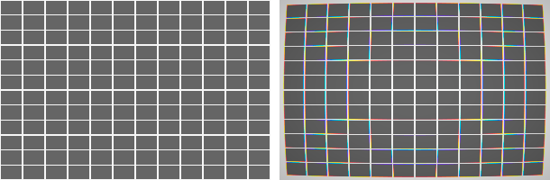
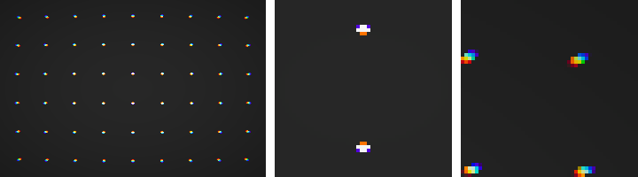
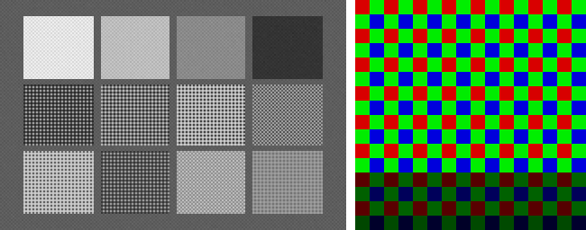

Every chapter after this one processes photographs. This chapter builds the camera that takes them — a camera made entirely of code.
The idea deserves a moment of justification, because it is the book’s single most important design decision. A real photograph gives you the output of a pipeline and no way to know what the right answer was. Was that demosaicing artifact caused by the algorithm, or was the scene really like that? Is the white balance correct, or merely plausible? With a real camera you can never quite know, because you never have access to the scene itself — only to one camera’s imperfect record of it.
So we build the scene ourselves, from physics up. A synthetic world, a fictional lens, a simulated sensor — a forward model that produces raw files the same way a real camera does, except that at every stage we can pause it and look at the truth. When Chapter 4 measures a demosaicing algorithm, it will measure it against the actual full-color scene, because we rendered it. When Chapter 3 estimates the color of the light, we will know exactly how wrong the estimate is, because we chose the light. Every claim in this book of the form “this algorithm is better” comes with a number for that reason, and every reader gets identical results, whatever hardware they own.
One scope fence, stated before any code: this is a measurement instrument, not a renderer. Its scenes are flat patches, ramps, and analytic test targets — no geometry, no shadows, no illumination transport, nothing pretty. Every part of it is meant to be read in a sitting. The moment a feature would make it a graphics project, the feature is out.
1.1Scenes as spectra
Here is the trap this section exists to avoid. If we described our synthetic scenes as RGB values — “this patch is (0.8, 0.2, 0.1)” — the whole simulation would quietly become circular. A camera’s job is to produce RGB from light; a scene that is already RGB has done the camera’s job in advance, and everything downstream (white balance, the color matrix of Chapter 5, the whole question of what color is) would degenerate into pushing our own numbers around. The simulation would still run. It would just have nothing left to teach.
Light doesn’t come in three numbers. Light is a continuum: at every wavelength across the visible range — roughly 380 to 730 nanometers, violet to deep red — a light source emits some amount of power, and a surface reflects some fraction of what arrives. Color, the three-number kind, happens only at the very end, when an eye or a sensor with a small set of differently-tuned detectors collapses that continuum. Our scenes therefore speak in spectra, and the collapse to three numbers is performed — explicitly, in code we write — by the sensor in Section 1.3 and by the mathematics of human vision in Chapter 5.
A spectrum in this book is 36 numbers: samples every 10 nanometers from 380 to 730. That grid is a compromise, chosen deliberately. Fine enough that our colorimetry lands within a fraction of a percent of published reference values (the tests below hold us to that); coarse enough that a spectrum fits on one line of a page and a for loop over it is something you can read.
code/pxp/spectrum.pyclass Spectrum:
"""36 samples across the visible range, one per grid wavelength.
The same type serves two roles. As a *light*, samples are relative
power. As a *reflectance*, samples are the fraction of light a
surface returns at that wavelength, between 0 and 1.
"""
def __init__(self, samples):
if len(samples) != SAMPLE_COUNT:
raise ValueError(f"a Spectrum has {SAMPLE_COUNT} samples, "
f"got {len(samples)}")
self.samples = list(samples)
@classmethod
def from_function(cls, fn):
"""Sample fn(wavelength_nm) across the grid."""
return cls([fn(w) for w in WAVELENGTHS])
def lit_by(self, light):
"""The light leaving a surface: reflectance times illumination,
wavelength by wavelength. self is the reflectance."""
return Spectrum([r * l for r, l
in zip(self.samples, light.samples)])
def scaled(self, factor):
return Spectrum([s * factor for s in self.samples])
Note the two roles in the docstring. A light is a spectrum of emitted power. A surface is a spectrum of reflection fractions — a number between 0 and 1 at each wavelength. And the single most load-bearing line of physics in the whole simulator is the method that combines them: the light leaving a surface is the illumination times the reflectance, wavelength by wavelength. That one multiplication, lit_by, is where every color cast, every white-balance problem, and every metameric surprise in this book will come from.
The lights
The book keeps three lights, plus a reference. The first is tabulated: D65, the CIE’s standard “average daylight,” the reference white of sRGB and the closest thing color science has to a default sun. Its 36 samples come from the CIE’s own published table, resampled onto our grid — one of exactly two pieces of external data in the entire simulator (the other is the CIE observer, which arrives in Chapter 5).
The second light needs no table at all, and it is the one this chapter is proudest of. An incandescent bulb is a glowing filament, and the emission of a glowing body is given by Planck’s law:
\[ B(\lambda, T) \;\propto\; \frac{1}{\lambda^5}\,\frac{1}{e^{c_2/\lambda T} - 1} \]
power at each wavelength \(\lambda\) for a body at temperature \(T\), with \(c_2\) a physical constant. Run at 2856 kelvin, this formula is CIE standard illuminant A — the warm, orange archetype of every tungsten photograph ever taken. We get a standards-grade light source from four lines of arithmetic:
code/pxp/illuminant.pydef incandescent(temperature_k=2856.0):
"""A glowing filament, from physics rather than a table: Planck's
law gives the emission of a hot body at each wavelength. At 2856 K
this is CIE standard illuminant A — warm, orange, and entirely
computable from one formula."""
c2 = 1.4388e-2 # second radiation constant, m*K
def planck(wavelength_nm):
wl = wavelength_nm * 1e-9 # to meters
return wl ** -5 / (math.exp(c2 / (wl * temperature_k)) - 1.0)
anchor = planck(560.0)
return Spectrum.from_function(lambda w: planck(w) / anchor)
The third light is a deliberate troublemaker: a fluorescent tube, modeled as a dim continuum with three sharp emission lines. Nothing about it is exotic — cheap tubes really do look like this — but a light that delivers its power in spikes breaks the comfortable intuition that “white light is white light,” and in Chapter 5 it will let us demonstrate metamerism: two surfaces that match perfectly under one light and visibly disagree under another. We build it now and keep it in a drawer.
Where the numbers come from
The D65 table and (in Chapter 5) the CIE 1931 observer curves are point-sampled from the CIE’s open data files — 1-nanometer tables published under ISO/CIE 11664, sampled at our grid wavelengths with no interpolation. Everything else spectral in this book — every surface, the filament, the fluorescent — is computed from formulas printed on these pages. The tests pin our sampled arithmetic to the published white points: D65 must land at chromaticity (0.3127, 0.3290) and illuminant A at (0.4476, 0.4074), within two parts in a thousand.
code/tests/test_color.pyclass TestWhitePoints(unittest.TestCase):
def assert_chromaticity(self, light, expected_x, expected_y, tol):
x, y = color.chromaticity(color.xyz(light))
self.assertAlmostEqual(x, expected_x, delta=tol)
self.assertAlmostEqual(y, expected_y, delta=tol)
def test_daylight_is_d65(self):
self.assert_chromaticity(illuminant.daylight(),
0.3127, 0.3290, tol=0.002)
def test_incandescent_is_illuminant_a(self):
self.assert_chromaticity(illuminant.incandescent(),
0.4476, 0.4074, tol=0.002)
def test_equal_energy_is_centered(self):
self.assert_chromaticity(illuminant.equal_energy(),
1 / 3, 1 / 3, tol=0.002)
The surfaces
Real test charts have measured patches — someone pointed a spectrophotometer at painted squares. Ours are designed, and from just two shapes: a smooth step that switches on above a chosen wavelength, and a smooth bump centered on one.
code/pxp/reflectance.pydef step(wavelength, center, width):
"""Rises smoothly from 0 to 1 as wavelength passes center."""
return 1.0 / (1.0 + math.exp(-(wavelength - center) / width))
code/pxp/reflectance.pydef bump(wavelength, center, width):
"""A smooth peak of height 1 at center, falling off on both sides."""
return math.exp(-((wavelength - center) / width) ** 2)
Chemistry is kind to us here: these are honestly the shapes real pigment reflectances take. A red surface is red because its reflectance steps up somewhere around 600 nm; a green one carries a bump near the middle of the range. Building patches from formulas instead of measurements keeps the chart fully original and — better — printable. Here is the entire chart, every patch a one-line formula:
code/pxp/reflectance.pydef color_chart():
"""The book's twelve-patch chart: name -> reflectance.
Neutrals down the first column, then the strong colors, then two
softer 'real world' surfaces. Every worked example about color in
this book photographs these patches.
"""
return [
("white", patch(lambda w: 0.92)),
("gray-60", patch(lambda w: 0.60)),
("gray-30", patch(lambda w: 0.30)),
("black", patch(lambda w: 0.04)),
("red", patch(lambda w: 0.03 + 0.82 * step(w, 600, 12))),
("orange", patch(lambda w: 0.04 + 0.80 * step(w, 575, 15))),
("yellow", patch(lambda w: 0.05 + 0.83 * step(w, 540, 15))),
("leaf-green", patch(lambda w: 0.04 + 0.48 * bump(w, 540, 45))),
("cyan", patch(lambda w: 0.05 + 0.72 * (1 - step(w, 555, 15)))),
("blue", patch(lambda w: 0.04 + 0.60 * bump(w, 455, 35))),
("magenta", patch(lambda w: 0.80 - 0.68 * bump(w, 540, 50))),
("skin", patch(lambda w: 0.22 + 0.33 * step(w, 570, 25))),
]
Twelve surfaces: four neutrals, seven strong colors, and one soft “skin” tone that will keep the later chapters honest (nobody notices when an algorithm ruins a magenta patch; everybody notices ruined skin). The patch helper refuses any formula that leaves the physical range — a surface cannot reflect less than nothing or more than everything.
First look at ground truth
We now have lights and surfaces, and lit_by to combine them. To actually see the result, this chapter borrows two tools that will not be properly explained until later — the integration of a spectrum against the CIE observer to get XYZ (Chapter 5) and the sRGB encoding for display (Chapter 7). They live in pxp.color, they are as explicit as everything else, and for now they are simply how the simulator shows us its world. Figure 1.1 is the payoff:

Look at what the filament does. The white patch is peach. The gray column has become a ladder of warm tans. Blue has collapsed toward violet-black — a tungsten bulb emits very little short-wavelength power, so a surface that reflects only short wavelengths has almost nothing to reflect. And the skin patch has gone from plausible to sunburnt. None of this is an artifact or an error: this is what the scene actually looks like under that light, computed wavelength by wavelength from formulas you have now read in full. Your visual system performs a version of white balance so relentlessly that you have likely never seen a white surface render this honestly before.
That is the entire point of the simulated camera. A real photograph of a real chart under a real bulb would give us pixels like the right grid — but entangled with one particular sensor’s spectral taste, one manufacturer’s processing, and no way to separate the light from the camera. Here we have the scene itself, pristine, with the camera not yet built. Everything the rest of the pipeline does will be measured against this.
1.2A small lens with known sins
So far our scenes are mathematical abstractions: a rule that answers “how much light leaves this point?” for any position and wavelength. Before that light reaches a sensor it passes through glass, and glass is where the first distinctly photographic imperfections enter. To let a lens ask about exactly the point it bends toward, scenes become spatial through one small class — a Scene wraps a reflectance-at-position rule together with a light, and its sample(x, y, band) method is what everything downstream calls. Three procedural test targets (the chart laid out in space, a grid of straight lines, an array of point lights) are the only scenes the book will ever need.
A real lens design fights a catalog of aberrations; correcting each one further costs exponentially more money and glass. Our fictional lens commits just the three sins that matter to the pipeline, each governed by a single coefficient:
code/pxp/lens.pyclass Lens:
"""Three flaws, three coefficients.
distortion radial: positive bows straight lines outward at the
edges (barrel), negative pinches them in (pincushion).
vignetting light falloff toward the corners.
ca lateral chromatic aberration: magnification that
drifts with wavelength, so the color channels of an
off-center point land at slightly different radii.
"""
def __init__(self, name, distortion=0.0, vignetting=0.0, ca=0.0):
self.name = name
self.distortion = distortion
self.vignetting = vignetting
self.ca = ca
def source_position(self, x, y, wavelength):
"""Where in the scene the lens looks, for sensor position
(x, y), at one wavelength."""
u, v = 2.0 * x - 1.0, 2.0 * y - 1.0 # centered coords
r2 = (u * u + v * v) / 2.0 # 1.0 at corners
magnification = ((1.0 + self.distortion * r2)
* (1.0 + self.ca * (wavelength - 560.0) / 560.0))
su, sv = u * magnification, v * magnification
return ((su + 1.0) / 2.0, (sv + 1.0) / 2.0)
def falloff(self, x, y):
"""The fraction of light that survives to (x, y): 1 at the
center, less toward the corners."""
u, v = 2.0 * x - 1.0, 2.0 * y - 1.0
r2 = (u * u + v * v) / 2.0
return 1.0 / (1.0 + self.vignetting * r2) ** 2
def look(self, scene, x, y):
"""The spectrum this lens delivers to sensor position (x, y):
each wavelength fetched from its own (slightly different)
scene position, all dimmed by the falloff."""
dimming = self.falloff(x, y)
samples = []
for band, wavelength in enumerate(WAVELENGTHS):
sx, sy = self.source_position(x, y, wavelength)
samples.append(scene.sample(sx, sy, band) * dimming)
return Spectrum(samples)
Read source_position closely, because the entire model is that method. A lens, for our purposes, is a rule about where to look: the sensor position asks for light, and the lens fetches it from a slightly wrong place. Radial distortion scales the fetch position by \(1 + k\,r^2\) — the classic single-coefficient model, and the same form (with more terms) used by real correction software. Lateral chromatic aberration makes that magnification drift with wavelength, so the corner of the frame fetches its blue from one place and its red from another; the loop in look is the moment where “the color channels don’t line up” stops being folklore and becomes seven lines of code. Vignetting doesn’t move light, it loses it — a smooth radial falloff applied to whatever arrives.

The book keeps two lenses. The perfect lens — identity geometry, no falloff — is the control group in every later experiment. The kit_lens has all three coefficients set to values chosen to be obvious in figures rather than realistic; a real prime lens is far better behaved, and the text will say so whenever it matters. For chromatic aberration especially, honesty requires exaggeration:

The dots tell the whole CA story in one image: at the center, all wavelengths agree about where the dot is; toward the corner they disagree in proportion to radius, and a white point becomes a tiny rainbow. Note that this is lateral CA — a geometric error, correctable by warping the channels back into register, which is exactly what Chapter 6 will do with these coefficients. (Axial CA, where wavelengths focus at different depths, blurs rather than shifts; it needs the defocus machinery this simulator deliberately doesn’t have, and the book discusses it without simulating it.)
1.3The sensor — where spectra die
Everything so far is a continuum: power at every wavelength, radiance at every position. The sensor ends that, in three brutal steps. It samples space on a pixel grid. It collapses each pixel’s spectrum to a single number through a colored filter. And it adds noise, because physics leaves it no choice.
The filters come first. Our sensor has three, fictional but shaped like real CMOS filter dyes: broad, heavily overlapping bumps, with the red filter leaking slightly in the blue (real red dyes do). Two properties matter enormously later. These curves are not the human eye’s — the gap between what the sensor measures and what a person sees is precisely what Chapter 5’s color matrix exists to bridge. And they overlap, so no surface excites only one channel — which is why “camera RGB” will turn out not to be a color space at all.
But a sensor does not get three measurements per pixel. Each photosite sits under exactly one filter, arranged in the Bayer mosaic — the pattern that Chapter 4 will spend an entire chapter undoing:
code/pxp/sensor.pydef cfa_channel(x, y):
"""Which filter sits over pixel (x, y): 0=R, 1=G, 2=B, in the
RGGB arrangement — red on even/even, blue on odd/odd, green on
the other two corners of every 2x2 cell."""
if y % 2 == 0:
return 0 if x % 2 == 0 else 1
return 1 if x % 2 == 0 else 2
Two greens per 2x2 cell, one red, one blue: half the sensor measures green, because human vision takes most of its sharpness from the middle of the spectrum and the pattern’s designer, Bryce Bayer, spent his budget accordingly. Here is the sensor in full — the last stop before every photograph in this book:
code/pxp/sensor.pyclass Sensor:
"""A small, honest CMOS stand-in.
full_well electrons a pixel can hold before it clips
read_noise electrons of Gaussian noise added by readout
fpn fixed-pattern noise: per-column gain spread (fraction)
bit_depth ADC resolution; black_level is the offset the ADC
adds so that noise around zero is not cut in half
seed every sensor is deterministic: same sensor, same
scene, same frame — bit for bit
"""
def __init__(self, width, height, seed=7, bit_depth=12,
black_level=64, full_well=12000.0, read_noise=4.0,
fpn=0.004):
self.width = width
self.height = height
self.bit_depth = bit_depth
self.black_level = black_level
self.white_level = 2 ** bit_depth - 1
self.full_well = full_well
self.read_noise = read_noise
self.seed = seed
rng = random.Random(seed)
self.column_gain = [rng.gauss(1.0, fpn) for _ in range(width)]
def photosite_signal(self, spectrum, channel):
"""One pixel's catch, before noise: the incoming spectrum
weighed by that pixel's filter, summed. A fraction of the
full well, in [0, ~1]."""
response = SENSITIVITIES[channel].samples
total = 0.0
for band in range(SAMPLE_COUNT):
total += spectrum.samples[band] * response[band]
return total / SAMPLE_COUNT
def expose_for(self, scene, lens, highlight=0.85):
"""A crude light meter: scan a coarse grid, find the brightest
green-filtered signal, and choose the exposure that places it
at `highlight` of the full well."""
brightest = 0.0
for gy in range(12):
for gx in range(16):
x, y = (gx + 0.5) / 16, (gy + 0.5) / 12
spectrum = lens.look(scene, x, y)
brightest = max(brightest,
self.photosite_signal(spectrum, 1))
return highlight * self.full_well / brightest
def capture(self, scene, lens, exposure, iso_gain=1.0):
"""Take the picture. Returns a RawImage of quantized values,
one per pixel, each seen through its own CFA filter."""
rng = random.Random((self.seed, exposure, iso_gain).__repr__())
gain = (self.white_level - self.black_level) / self.full_well
values = []
for y in range(self.height):
row = []
for x in range(self.width):
spectrum = lens.look(scene, (x + 0.5) / self.width,
(y + 0.5) / self.height)
channel = cfa_channel(x, y)
electrons = (self.photosite_signal(spectrum, channel)
* exposure * self.column_gain[x])
electrons = min(electrons, self.full_well)
if electrons > 0.0: # shot noise
electrons += rng.gauss(0.0, math.sqrt(electrons))
electrons = min(max(electrons, 0.0), self.full_well)
# read noise happens in the readout wiring, after the
# well: it can and does swing below true black, which
# is the whole reason the black_level offset exists
signal = electrons + rng.gauss(0.0, self.read_noise)
value = self.black_level + signal * gain * iso_gain
row.append(min(self.white_level, max(0, round(value))))
values.append(row)
return RawImage(self.width, self.height, values,
bit_depth=self.bit_depth,
black_level=self.black_level,
cfa=CFA_PATTERN)
The noise lines deserve a slow read, because they are the truest physics in the simulator. Light arrives in photons, and a photosite expecting \(N\) electrons in an exposure actually collects \(N\) give or take \(\sqrt{N}\) — shot noise, a property of light itself, not of the sensor, and the reason no camera at any price takes a noiseless photograph. The readout electronics add a few electrons of Gaussian read noise on top. And each column’s amplifier has its own slightly-off gain — fixed-pattern noise, the same stripes in every frame, which is what will make it correctable in Chapter 2 while the random noise is merely reducible. Note also what the ADC does at the bottom of capture: it adds a black_level offset before quantizing, so that the noise dancing around zero survives digitization intact instead of having its negative half chopped off. That little offset is why Chapter 2 begins with black-level subtraction.

Look at the left panel’s neutral patches: even they are textured, and the texture is not noise — green photosites simply catch more of D65 than red or blue ones do through these filters. A raw file straight off any sensor is dim, mosaiced, and green-tinted; every “why does my raw look like that” forum thread traces back to this figure. The right panel is the pipeline’s to-do list in miniature: Chapters 2 through 5 exist to turn that checkerboard back into a photograph.
1.4The raw file
One step remains: writing the frame to disk. Real raw formats are sprawling — thumbnails, EXIF blocks, maker notes, encrypted focus data — but beneath the flourishes every one of them is the same thing: a header saying how to read the numbers, then the numbers. Our container is exactly that and nothing else:
code/pxp/raw.py"""The book's raw container: the least file format that could work.
A raw file, stripped of every vendor flourish, is a header saying how
to read the numbers, then the numbers. Ours is exactly that: a magic
string, six small header fields, the CFA arrangement, and the sensor
values row by row as big-endian 16-bit integers. Section 1.5 compares
this honestly against real DNG.
"""
import struct
MAGIC = b"PXRAW"
VERSION = 1
class RawImage:
"""One frame off the sensor: integer values, one per pixel, plus
the facts needed to interpret them."""
def __init__(self, width, height, values, bit_depth=12,
black_level=64, cfa="RGGB"):
self.width = width
self.height = height
self.values = values # values[y][x], ints
self.bit_depth = bit_depth
self.black_level = black_level
self.white_level = 2 ** bit_depth - 1
self.cfa = cfa
def save(raw, path):
header = struct.pack(">5sBHHBH4s", MAGIC, VERSION,
raw.width, raw.height,
raw.bit_depth, raw.black_level,
raw.cfa.encode("ascii"))
with open(path, "wb") as f:
f.write(header)
for row in raw.values:
f.write(struct.pack(f">{raw.width}H", *row))
def load(path):
with open(path, "rb") as f:
magic, version, width, height, bit_depth, black, cfa = (
struct.unpack(">5sBHHBH4s", f.read(17)))
if magic != MAGIC or version != VERSION:
raise ValueError("not a PXRAW version-1 file")
values = [list(struct.unpack(f">{width}H", f.read(width * 2)))
for _ in range(height)]
return RawImage(width, height, values, bit_depth=bit_depth,
black_level=black, cfa=cfa.decode("ascii"))
Seventeen bytes of header, then two bytes per pixel. A file you can read with your eyes:
00000000 50 58 52 41 57 01 00 30 00 20 0c 00 40 52 47 47 |PXRAW..0. ..@RGG|
00000010 42 01 d0 02 16 01 cc 02 22 01 d0 02 29 01 ba 02 |B......."...)...|
00000020 1c 01 ce 02 37 01 db 02 2d 01 c7 02 17 01 e4 02 |....7...-.......|
That is a real capture of the chart (48x32, for a file small enough to dump). The magic spells PXRAW; then version 01; 0030 and 0020 are 48 and 32; 0c is 12 bits; 0040 is the black level of 64; then RGGB. And the pixel values that follow are already telling the truth about the sensor: they alternate 01xx, 02xx, 01xx, 02xx — red site, green site, red site, green site across the top row of a gray surround, the green ones half again brighter. You can see the color filter array in the hex dump.
1.5Sidebar: what real raw files add
This container vs. DNG
Adobe’s DNG — the closest thing to a published, non-proprietary raw format — is a TIFF: a tag tree rather than a fixed header, which is most of the difference. Where our seventeen bytes say width, height, bits, black level, CFA, DNG says the same things in tags (ImageWidth, BitsPerSample, BlackLevel, CFAPattern) plus the things our simulator doesn’t need yet: ColorMatrix1/2 (the camera-to-XYZ matrices Chapter 5 derives from scratch), AsShotNeutral (the camera’s own white-balance guess, Chapter 3’s competitor), lens-correction opcodes (Chapter 6’s job, shipped as data), and compression. Nothing in a DNG is conceptually missing from this chapter — it is this chapter, industrialized. The book never parses DNG; when Chapter 10 needs real files, it lets rawpy do the reading and keeps its attention on the pixels.
The camera is complete: spectra in, integers out — scene → lens → sensor → file, every stage a page of code, every flaw a number we chose. From here the direction of travel reverses. The simulator spent this chapter carefully ruining a perfect scene; the rest of the book is the long climb back. Chapter 2 starts at the bottom, with the numbers themselves: black level, noise, and what “exposure” really means to a photosite.